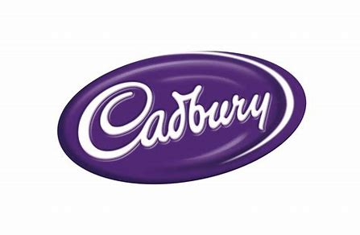

Normal Image

Transparent Image
Cadbury Dairy Milk is a milk chocolate brand that was proposed in the U.k. in 1905 and has since expanded to include other goods. Its
chocolates are made using milk chocolate. It received the title of the finest chocolate in the United Kingdom in 2014. It has granted
Hershey's Group a license to make and sell chocolates in the United States. Cadbury's Dairy Milk, which has been melting our hearts for
the past seven decades, has revamped itself in each phase and spread joy.
Caaaaddddbbbbuuurrrryyyy